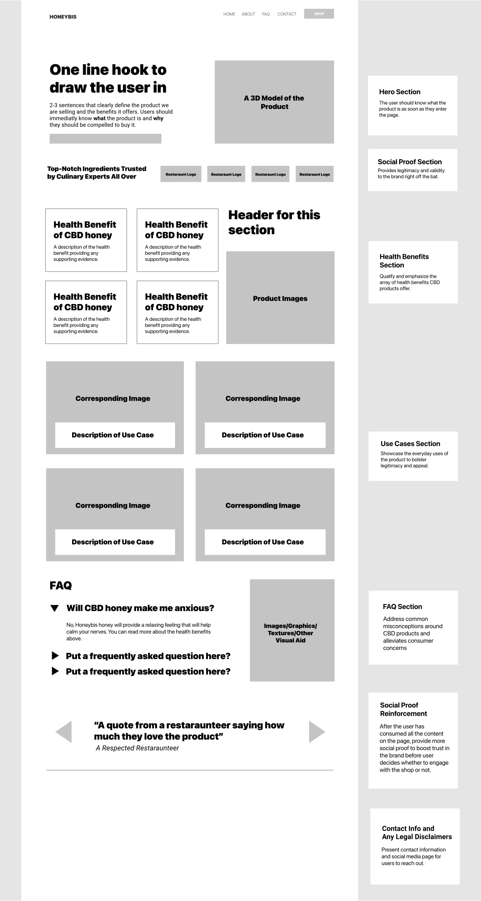
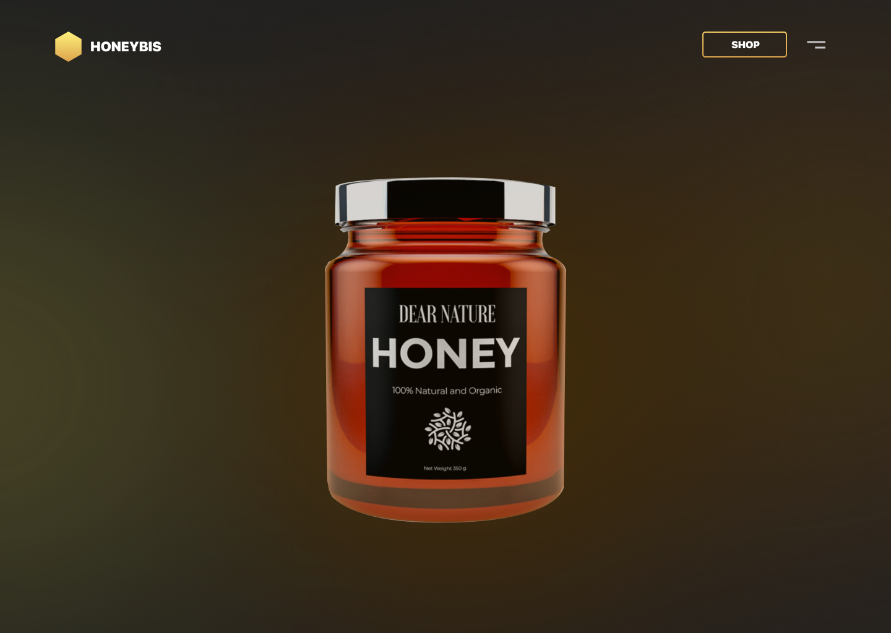

Honeybis
UX/UI & Web Design
Overview
Based out of Philadelphia, Honeybis produces, manufactures, and sells CBD-infused honey products. During the summer of 2021, I worked alongside a full-stack developer to research, design, and develop an e-commerce landing page for the company to advertise and sell their products online.
Team
1 Full-Stack Developer
Deliverable
E-Commerce Website
Identifying the problem
Honeybis was entering a saturated market rife with misinformation and negative stigma. As such, Honeybis’s problems were two-fold:
- Differentiating their product from the competitive landscape
- Overcoming negative stigma surrounding cannabis and CBD
The question became —
how can we craft a professional brand identity that will inspire trust in consumers while also helping Honeybis stand out from competitors?
Mapping the solution
In order to solve Honeybis’s problem, we set out to build a user experience that communicated Honeybis’s product in a succint manner. We compartmentalized our approach into three sections:
What?
What exactly does Honeybis sell? What is CBD honey and what does it do?
Why?
Why buy CBD honey? What are its benefits? What makes Honeybis stand-out from competitors?
How?
How do you use CBD honey? What does its application look like on a day-to-day basis?
We decided if we could clearly communicate the answers to these three sets of questions, we would effectively highlight Honeybis’s unique value prop while alleviating concerns potential consumers may have about purchasing cannabis products in the first place.
Building visitor profiles
After speaking with Honeybis’s founders, we next considered common visitor profiles — what types of people would be visiting Honeybis’s page? What would they be looking to get out of the website? We came up with three primary profiles.
Return Customer
Has already decided they desire to purchase the product, on the site just to buy it.
Shop Page
Return customers will want to access the shop page as easily and quickly as possible.
Wholesaler
Looking to purchase Honeybis product in bulk at a discount.
Contact
Since wholesalers will not be able to use the shop, they will need to contact Honeybis.
Prospective Customer
Has not yet decided if they want to purchase the product — has interest but still on the fence.
Learn More
Prospects are looking to learn more about Honeybis and CBD products at large (FAQ, benefits, etc.)
Our goal was to make these three “transactions” — shop, contact, and learn more — as accessible and intuitive as possible.
Low-fi wireframing
Next, we drafted a low-fidelity wireframe. The low-fi wireframe acted as the site’s blueprint — dictating which information would be displayed and in what order. The wireframe was to be a rough guide, and we designed it with the understanding that the nitty-gritty design details would be subject to change.

When building out the wireframe, it was integral to not lose sight of the why behind our decisions. Our goal was to tie every section back to one of the three essential questions — what, why, and how?
For example, the hero would speak to the “what” — what Honeybis sells, what it looks like, what it does. The health benefits section and social proof spoke to the “why” — why incorporate CBD oil into your daily routines? Why Honeybis in particular over other brand alternatives. The use cases section spoke to the “how” — how to use Honeybis oils on a day to day basis.
Branding & design language
Next, we began to build out brand guidelines and brainstorm design language ideas. We started with competitors in the space — how did other companies producing CBD honey look?
It didn’t take us long to identify a pattern. Most of the competitive landscape boasted warm, friendly, and organic branding palettes. The colors were vibrant yellows and oranges, the fonts were playful serifs.
With this in mind, we opted instead for a minimal, sleek, and modern design approach. Our decision here was two-fold. One — borrowing from popular design trends will allow Honeybis to establish immediate rapport with customers. People tend to intuitively trust what’s familiar. Two — sleek and minimal branding positioned Honeybis uniquely against its maximal, warm, and cozy competitive landscape.
Landing page sprint
After getting a general understanding of Honeybis’s branding and design language, I came up with three different landing pages concepts for the client to choose from.
After reviewing the mockups with the Honeybis team, we elected to proceed with the middle design and dark, frosted UI.
3-D Model
The Honeybis team expressed interest in developing a 3D model of their product jar that would move as the page scrolled, similar to Apple’s iPhone landing page.
To achieve this, I began with storyboarding the overall flow of the animation.
